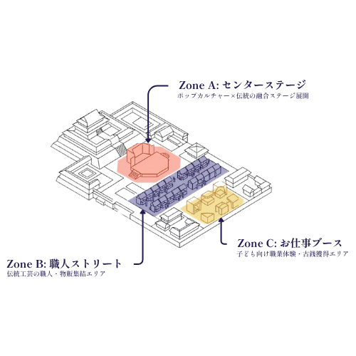

伝統文化の体験と経済教育が融合した、
全く新しい『教育型エンターテインメント空間』が誕生！
 従来のイベント
従来のイベント
ガラスケースの向こうにある、美しい作品。素晴らしいものだと理解はできても、その背景にある物語や職人の想い、超絶的な技巧に触れる機会は限られています。作り手と使い手の間には、見えない壁が存在していました。
 伝統万博2026
伝統万博2026
伝統万博は、作品を「鑑賞」するだけの場ではありません。職人と一緒に手を動かし、その技に驚き、ものづくりの哲学を語り合う。体験、対話、ワークショップを通じて、作り手と使い手が直接つながる場を創出します。
かつて、城を中心に人が集まり、文化と経済が栄えたように。
私たちは、卓越した技術と熱意を持つ「職人・作家」を核として、人々が集い、学び、交流するコミュニティを育みます。それが、伝統万博が目指す「現代の城下町」の姿です。

単なる一過性のお祭りではありません。「伝統万博」は、子どもたちが日本の本物の伝統文化に触れ、同時に独自の「古銭システム」を通じて、自分でお仕事を体験しお金を稼ぐ仕組み（キャリア・経済教育）を体験できる、全く新しい形の「教育型エンターテインメント」です。地域と伝統、そして次世代をつなぐハブとして、未来へ続くサステナブルな体験をお届けします。

職人やパフォーマーによる、教科書だけでは学べない一流 of 技術と文化を間近で継承。

独自の「古銭システム」を通じ、遊びながらキャリアと経済 of 仕組みを学ぶ。

ポップカルチャーと伝統が融合した、誰もがワクワクする体験型ステージ！
私たちが目指すのは、一度きりのイベントではありません。
職人も、来場者も、運営スタッフも、関わったすべての人が「また来年も、この場所に戻ってきたい」と心から願うような、温かいコミュニティの出発点です。


会場全体が、まるで一歩足を踏み入れると歴史の世界に入り込んだような「城下町」に変身！日本が誇る伝統工芸の職人や、迫力満点のパフォーマーたちが集結します。

会場内だけで使える専用通貨「古銭」を使った、社会的意義の高い体験コンテンツです。単なる遊びではなく、労働と対価、そして経済の仕組みを体感できます。

ご家族で安心して、ストレスなく楽しんでいただくための快適なシステムを導入しています。混雑を緩和し、安全で快適な会場フローを提供します。
| イベント名 | 美容万博 x 伝統万博 |
|---|---|
| 開催日時 | 2026年10月12日（月・祝） 10:00~16:00 |
| 会場 |
Grand Beauty B's 緑店〔ヘア〕 〒458-0011 愛知県名古屋市緑区相川3-233 【相生山駅徒歩7分】 |
| 対象 | 小学生を中心としたファミリー層、伝統文化に関心のある若年層 |
| 入場料 | 無料 |
| 主催 | 伝統万博実行委員会 |

画像をクリックすると拡大します
前回、Maker's Pier Central Parkで開催され、500名以上の動員を記録した「伝統万博2025」のダイジェストムービーです。 迫力ある書道パフォーマンス、息をのむ殺陣（たて）・演武、美しい三味線の音色。そして、伝統工芸アイドルによる華やかなステージや、子どもたちが真剣な表情と満面の笑顔で職人体験（染め物など）に挑戦している熱気あふれる様子を、ぜひ動画でご覧ください！

.jpg)


 (1).jpg)


.jpg)

火縄銃の射撃競技選手として「全日本前装銃射撃競技選手権大会（立射部門）」や「中島流古式砲術射撃大会」で優勝した実績を持つ演武者。日本武道館をはじめ全国各地、さらにはフランス・パリで開催された「Japan Expo」に招待出展するなど、国内外で広く活動。
また、伝統技術を活用したブランド「伝統屋暁」を立ち上げ、近年ではデザイナー・コシノジュンコ氏との協業案件やミラノコレクションへの出展など、伝統と現代デザインを融合させる先駆者として高い評価を得ています。
イベントに関するご質問、取材のお申し込みなど、お気軽にお問い合わせください。